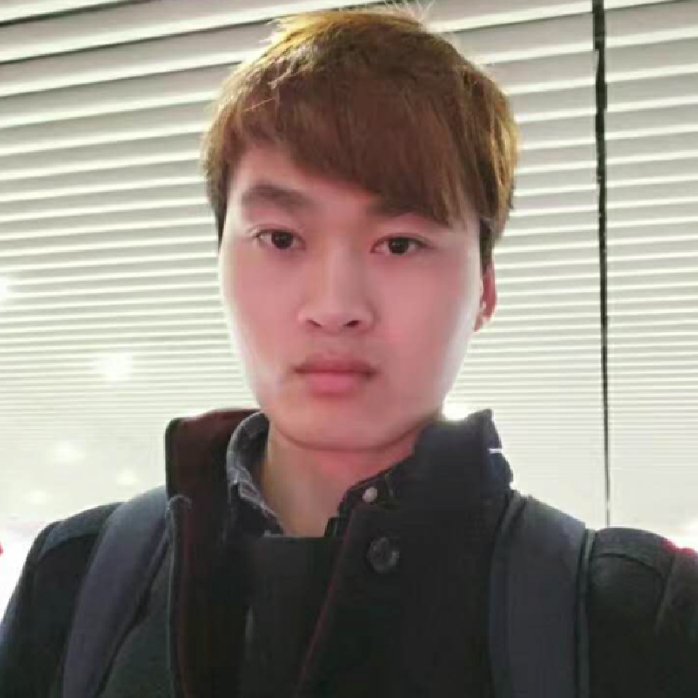
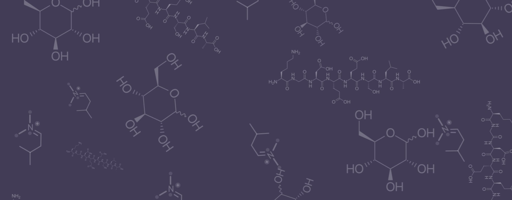

Hu Cao (曹虎)
Ph.D. Candidate at I6, Chair of Robotics, AI and Real-time Systems
Fakultät für Informatik
Chair of Robotics, AI and Real-time Systems
Technical University of Munich, Munich, Germany 85748
Email: hu.cao@tum.de


